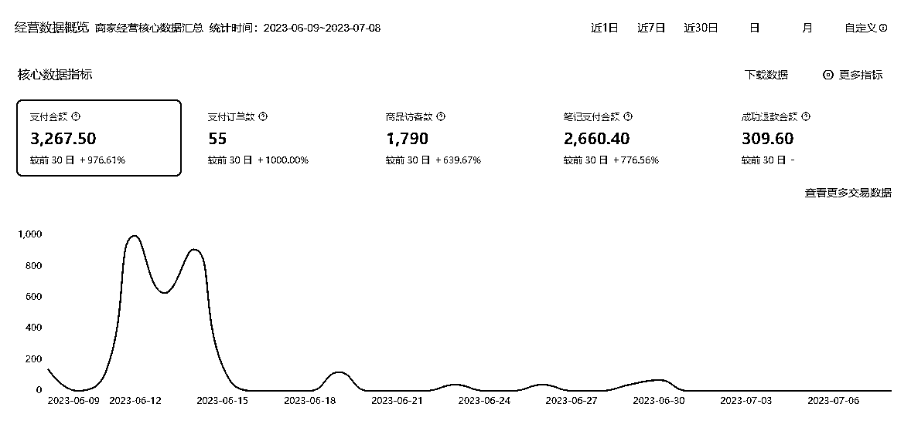
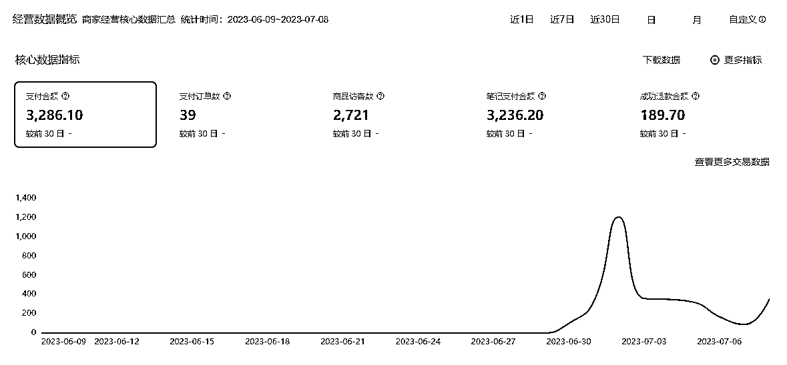

来源：https://pu6uadh9h1.feishu.cn/docx/CdxgdDCB8opj0LxiUZccdq0Tngg
各位圈友，大家好！我是前行，今年3月18号刚加入生财的萌新。
之前从未做过副业，是生财让我开了眼界，让我发现原来赚钱还有这么多方法和渠道，还有这么多项目可以做，并且天花板对于目前的我来说都是比较高的，适合深入研究。
这里需要感谢我的朋友给我分享了生财66个赚钱项目，以至于我有机会认识生财，从而赚到工资以外的第一块钱、第100块钱、第1000块钱……
接下来，开始复盘从5月份开始做的小红书店铺项目，也是我真真正正的第一个副业，对我的意义非凡。
到2023.7.10，我一共开过5个店铺，前三个店铺卖的是饰品、防晒类、玩具，都没有拿到结果。
从第四个起，都是开了食品类的，都拿到了一些小结果。但也存在不少问题，基本只是跑通了从0到1，从1到1.5还在摸索中。
这是我拿到的小结果。


这次分享主要是给尚未从0到1的圈友信心，以及给自己复盘反思的机会。
对于目前的小红书店铺，真的只要执行力拉满，就能获得反馈。
本文主要分为3个方面内容：保持平常心；执行力拉满；问题探讨与请教。
前前后后做了5个店铺后，回头看，发现心态真的很重要，不仅影响效率，而且对于能否拿到结果起到关键作用。好的心态，才能产生持续的自驱力，执行力才能拉满。
分享3点我认为最容易打破心态的情况，供大家参考。
1、一定要明确我们做项目的初心是——高效的赚钱，而不是其他。
在没开始前，很多新手很容易考虑太多问题，比如说拼多多面单问题，一天发多少笔记，是图文好，还是视频好，上家怎么找，退货了怎么办，地址怎么填等等。这些确实都是要考虑的问题，但一定不是一开始要考虑的问题，特别是在没有出单前。
为什么这么说呢？因为解决这些问题需要耗费你不少精力，而且解决了不一定能出单，当你还没拿到结果，却一直花大量的时间去解决这些看似重要的问题，你的做项目热情会持续减退。
而如果你一步一步来，到了哪个节点解决哪个问题，你一定会更有热情和耐心持续下去。试想一下，有出单后去货比三家找上家，与没出单比，心态和心情能一样吗？
2、笔记流量少，流量不稳定，被提示违规等等，这是再正常不过了，大家一定不要有玻璃心。
这不是平台在针对我们，这也是我一直告诉自己的，因为从0到1阶段基本都是在搬运，在尝试。一定要保住心态，给自己信心，熟练起来，数据会好的。最坏的打算，就直接关店，重新养号开店，只要不下桌就有希望。
3、一定要形成自己每天的行动sop，然后形成习惯，用习惯对抗懒惰与借口。
总的来说，先做起来，一步一步走，走到哪遇到什么问题就解决什么问题，不要花那么多时间精力考虑后续的问题。先做到从0到1再说。
总的流程：养号→开店铺→选品→发笔记→数据分析，其中选品→发笔记→数据分析是一个循环，需要持续进行，确保持续出单。下面对每一步展开讲。
1、养号
养号可以提高账号权重，权重高低平台给的流量天壤之别。
怎么养号，很多大佬都说得很清楚，照做就行。
这里强调几点：①养号的期间也是在找对标，所以只看自己准备卖的类目笔记，尤其重点关注低粉（＜1000粉）但店铺单品销量超过1000+的账号，后续可以直接对标选品。②开店铺前，先发3-5篇互动笔记，24小时能有200以上，账号就是正常。当然小眼睛越高，说明权重越高，账号后续获得大流量的可能性更大。
2、开店铺
强烈推荐去办理个体户，花600去认证为企业专业号，然后再开店铺。这样做的好处是，开的这个店铺可以再关联3个个人号一起推广，相当于4个号一起推广。
更重要的是，当关联的个人号违规限流后可以直接解除关联，重新关联其他个人号，继续推广。
如果是个人号开的店铺，限流没流量后基本很难抢救。
我一开始变现的店铺就是开了个人店，限流后就没办法起来了，只能放着。后面我就去认证，开了企业号，目前也是被限流，不过可以解绑掉原来的个人号重新关联推广。
3、选品
其实在养号阶段已经开始选品，在发现页一直刷，特别留意低粉高赞高销量的笔记（粉丝＜1000，销量＞1000或者赞藏＞500），都是可以直接对标的品，或者模仿的笔记。
这里有一点说明，选品类最好选择自己有资源、感兴趣或者自己比较懂的。我之前踩过坑，前前后后选过饰品，防晒，玩具，都没拿到结果，5月航海最后一周选了一个自己比较懂的品类，才拿到小小的结果，目前也打算在这个品类做下去。
选品的方法有好多，很多大佬都讲过，选一种合适自己的方法持续做下去就好。方法不需要太多。
我的话，之前有婵小红会员，就通过婵小红周榜选品，选择粉丝少销量大的品上架测试。后面会员到期后，试了一下用抖音精选联盟选品也不错，都能出单。
这里说一些小技巧，在上架商品时，可以设置几个规格，并且在每个规格后面加上 XX%顾客选择，利润高的就写高点，然后再设置促销券。比如，卖糕点，设置3个规格：1盒29.9 25%顾客选择，2盒49.9 55%顾客选择，3盒69.9 87%顾客选择。没有验证过是否能提升转化率，但是从从众心理来说，多少能提升一点。
4、发笔记
这一步最能体现是否高效。目前带货笔记大部分是视频形式，所以如何剪辑视频，如何去重是需要重点考虑的问题。这一步卡住了不少新人，我觉得如何剪辑去重，二创是短视频带货必学的技能。
强烈推荐奇杰老师关于批量剪辑视频的文章，重点掌握的是批量去重思维，而不止是学习里面的步骤。
因为自己去重做的不是很好，就不分享。只能说账号有流量有出单了，能实拍尽量自己买来实拍，就不用担心去重问题。我两个出单店铺都是因为非原创被限流。
至于发多少笔记，建议一个账号发10篇左右，间隔1小时发。在不清楚怎样的视频更吸引人的情况下，怼量仍然是有优势的，发多了，通过数据分析可以看出一些门道，再继续优化。当然这些视频素材仍然是找爆款视频，在选品阶段就可以积累。具体如何操作，大家去看奇杰老师的讲解。
5、数据分析
这一步，我自己做的一般，后续需要补上。在小红书商家后台是可以看到哪个笔记出单的，通过分析这个笔记内容，可以更加明确怎么优化。并且后台也能看到加购数，商品访客等等指标，这都能给优化笔记提供帮助。
最后，实操部分做个小结：
形成自己的操作sop，以我自己的为例。
1、养号：新号每天刷3次，每次10分钟左右，看到喜欢、高赞、多评论的就点赞收藏或者评论。刷完后，发一篇互动笔记，测试账号权重，操作3-5天，小眼睛稳定在200以上就可以开始发商品笔记。
2、选品：刷发现页，或者第三方工具查，保证每天至少选一个品，2-3天上架一次所选的品。
3、发笔记：每天找1-2小时批量剪辑视频，每个账号发10条，定时发布。10条里第一天都是一个品，有出单的话继续发，没有的话，第二天发8条+2条新品，再不出单就换其他品，这样子反复测试。数量不是固定的，根据自己来调整。
4、数据分析：每周分析一次，有时间的可以每天都分析。重点关注转化率，商品访客数，商品点击率，哪些笔记出单。
现在从0到1是跑通了，目前主要的卡点是无法持续稳定的出单和放大。
开过2个店铺，都是一周变现3000+后就被限流了，提示非原创。应该还是去重做的不够好。因为我是批量去重的，一次可以出20个视频。需要继续研究怎么批量去重，同时也考虑自己实拍，测试是否能把流量持续下去。
另外还有个问题，转化率低，这也是后续需要研究的问题。
总结起来应该是两类问题：
1、是否去重过关了，就可以持续稳定出单和放大？那是不是要重点突破批量去重的问题？
2、转化率低，这个该如何提升？多强调用户痛点？然后匹配解决方案？如何分析对标账号的转化率并加以模仿？
感谢各位大佬的指点，也欢迎圈友交流。
最后多说一句，保持平常心，执行力拉满，一起从0到1，再持续爆单。
感谢朋友引导我入生财，感谢生财团队、航海教练、志愿者以及各位圈友的无私分享与帮助，还有在生财持续分享赚钱项目的方法和经验的大佬们。
非常感谢，让我们一起生财有术。